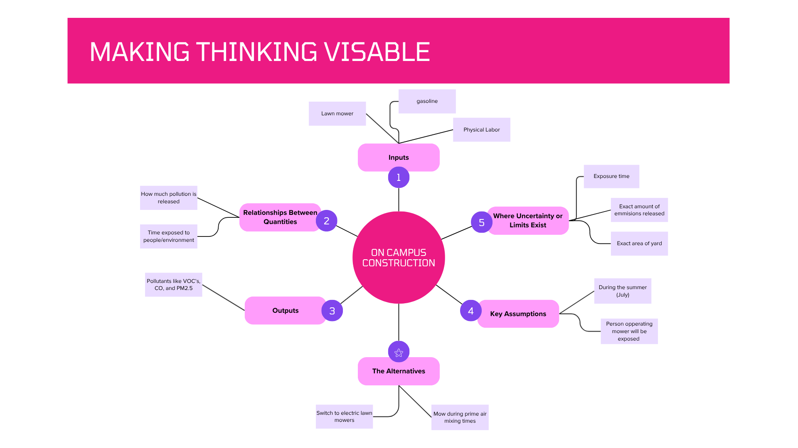
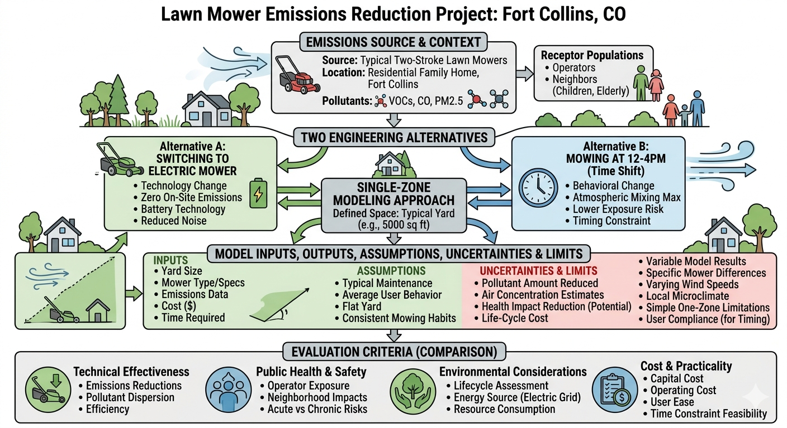

For the AI generated image, I used Gemini. I described the parameters for the diagram from the outline. I then explained my answers for each outline as well as gave some background to the project. I was very happy with the first output so I did not edit it further.
This is a tool designed for the tool 2 assignment in air quality engineering. It calculates emissions released from a typical two-stroke lawn mower in a typical home in Fort Collins. The two alternatives to address the pollution issue is to either switch to electric mowers or to mow at prime times when the air is most mixed. Click the buttons below to see how the values change for each alternative. Sliders are provided to change the yard area and time spent mowing for additional parameters. There is also a time selection box to see how different times of day affect air dispersion. Below the tool there is analysis on the two alternatives as well as a section explaining more about the tool itself.
60 500| Criteria | Weight | Electric | Scheduled |
|---|---|---|---|
| Technical | 0.4 | 5 | 3 |
| Health | 0.2 | 5 | 4 |
| Environmental | 0.2 | 4 | 3 |
| Cost | 0.2 | 3 | 5 |
| Category | Electric Lawn Mower | Scheduled Hours |
|---|---|---|
| Capital Equipment | $300–$800 mower | $0 |
| Operation & Maintenance | $20–$50/year | $0 |
| Battery Replacement | $100–$300 every 3–5 years | $0 |
| Behavior / Implementation | Minimal | Requires schedule change |
| Source | Manufacturer pricing | Engineering assumption |
Single-Zone Box Model: C = E / (V × k)
E = emission rate × time
V = area × mixing height
k = wind speed / characteristic length
| Time | Wind | Mixing Height |
|---|---|---|
| 7 AM | 1.5 | 200 |
| 10 AM | 2.5 | 600 |
| 1 PM | 3.5 | 1200 |
| 4 PM | 3.0 | 1000 |
| 7 PM | 2.0 | 400 |
Sources: EPA, NOAA, NREL
For this tool, I focused on pollutants produced from lawn mowers. My focus was on typical two-stroke lawn mowers in a typical family home in Fort Collins. My two alternative solutions that I compared in the tool are switching to electric mowers and to have a scheduled mowing time when air mixing is highest. For Tool 2 I used ChatGPT to help me write my code. I then plugged the code into VScode, polished it, and then pushed it to Github to create a page for my tool. We used a Single-Zone Box Model as a more simplified version of the Gaussian dispersion. We made a table with air mixing values from a typical week in July in Fort Collins from weather records and found average wind dispersion and height per time of day. This made the wind much easier to model per time of day, and therefore easier for the user to use and adjust parameters and to show how the specified mowing time alternative (12-4pm) reduced emissions. The electric lawn mower reduces the most emissions, however the scheduled mowing time does not require a purchase of a new lawnmower (can be costly). My suggestion would be if an electric mower is not in the budget, mowing between the hours of 12-4pm in Fort Collins works best. Where the comparison breaks down is that the release of PM2.5, VOC’s, and CO’s are harder to track from just one mower, and different models of lawn mowers can also vary the release of pollutants greatly, so the real life release of the pollutants provided in the calculator may be different then in real life. Weather, season, person's speed on the mower, elevation, slope of yard, and many other factors may also change the pollutant outputs. This is just a simple model to show a general release of pollutants from a typical lawn mower, and it does a great job comparing how the two alternatives reduce those pollutants. Since this project was much more complex than Tool 1, I ran into a lot more challenges then last time. Just planning how I wanted the tool to look and thinking about the inputs and outputs alone took a lot of thinking and redrafting. Because of the added complexity, coding the project also had a lot more issues. The first batch of code after I gave chatGPT a very long detailed text of instructions didn’t even work. However, I pivoted and looked at the parameters from another perspective, and changed a lot of my expectations. I also reorganized the flow of the tool to make it more user friendly. I finally got a usable code that worked, and from there we just corrected code issues and added in more details to the tool (and made it look clean). Overall this was a huge challenge for me, but I think the tool that came out of all this hard work works pretty well. A side note about another AI issue I had, I tried to get ChatGPT to put this section in paragraphs but it could not seem to preform that task even after multiple attempts. As for the for the Fort Collins wind table that helped to create the time based calculations, I gave chat GPT values and calculation guidance from EPA air quality modeling guidance, NOAA meteorological data summaries, and NREL wind resource data for Colorado, and told it to use a week in July for prime mowing time. The first time we made the table the values were very high and very unrealistic. After some tweaking with the data the table provided in the tool is the best version of all the data outputs ChatGPT created, and it is fairly realistic. GitHub link: https://github.com/sknodel11/lawn-mower-pollution